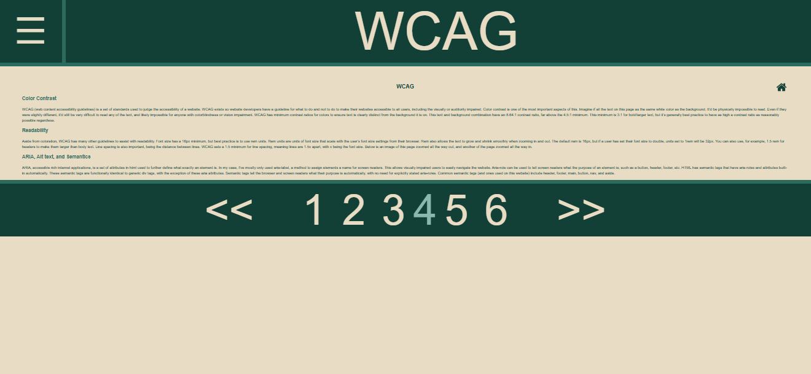
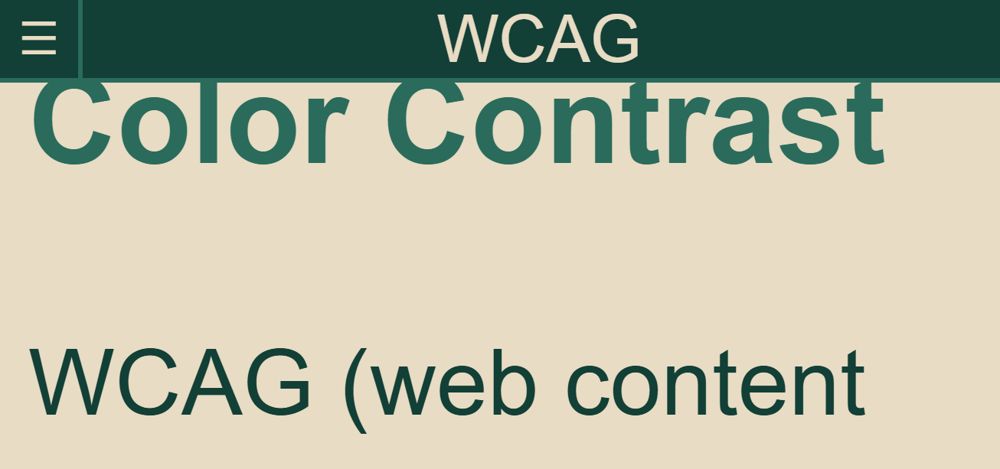

WCAG
Color Contrast
WCAG (web content accessibility guidelines) is a set of standards used to judge the accessibility of a website. WCAG exists so website developers have a guideline for what to do and not to do to make their websites accessible to all users, including the visually or auditorily impaired. Color contrast is one of the most important aspects of this. Imagine if all the text on this page as the same white color as the background. It'd be physically impossible to read. Even if they were slightly different, it'd still be very difficult to read any of the text, and likely impossible for anyone with colorblindness or vision impairment. WCAG has minimum contrast ratios for colors to ensure text is clearly distinct from the background it is on. This text and background combination have an 8.64:1 contrast ratio, far above the 4.5:1 minimum. This minimum is 3:1 for bold/larger text, but it's generally best practice to have as high a contrast ratio as reasonably possible regardless.
Readability
Aside from coloration, WCAG has many other guidelines to assist with readability. Font size has a 16px minimum, but best practice is to use rem units. Rem units are units of font size that scale with the user's font size settings from their browser. Rem also allows the text to grow and shrink smoothly when zooming in and out. The default rem is 16px, but if a user has set their font size to double, units set to 1rem will be 32px. You can also use, for example, 1.5 rem for headers to make them larger than body text. Line spacing is also important, being the distance between lines. WCAG sets a 1.5 minimum for line spacing, meaning lines are 1.5x apart, with x being the font size. Below is an image of this page zoomed all the way out, and another of the page zoomed all the way in.


ARIA, Alt text, and Semantics
ARIA, accessible rich internet applications, is a set of attributes in html used to further define what exactly an element is. In my case, I've mostly only used aria-label, a method to assign elements a name for screen readers. This allows visually impaired users to easily navigate the website. Aria-role can be used to tell screen readers what the purpose of an element is; such as a button, header, footer, etc. HTML has semantic tags that have aria roles and attributes built-in automatically. These semantic tags are functionally identical to generic div tags, with the exception of these aria attributes. Semantic tags tell the browser and screen readers what their purpose is automatically, with no need for explicitly stated aria-roles. Common semantic tags (and ones used on this website) include header, footer, main, button, nav, and aside.